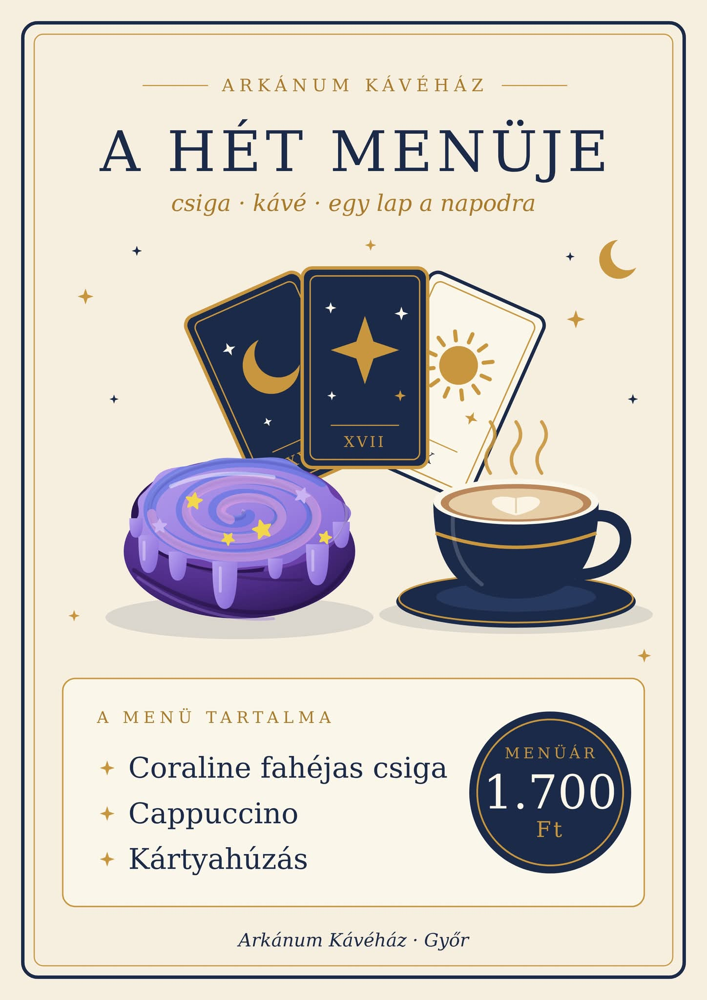

Arkánum Kávéház
Kávé és tarot Győr belvárosában. Minden kávé mellé húzhatsz egy kártyát.
A kávé mellé egy lap jár
A pultnál minden kávé mellé húzhatsz egy tarot kártyát, ez benne van a kávé árában. A lap mellé egy kis magyarázó szöveg is jár, ami elmondja, mit jelent. Nem jóslat, inkább egy gondolat a napodhoz. Elviheted, megtarthatod, vagy otthagyhatod a következő vendégnek.
Nálunk nem szól rádió. A lejátszási listát mi raktuk össze, olyan zenékből, amik mellett jó olvasni, tanulni vagy csak ülni egy kicsit.
Ha jobban érdekel a tarot, néha tanfolyamot és paklikészítő délutánt is tartunk. Ezekről az események között írunk.
A lapjainkat teljes pakliban is hazaviheted, négyféle dizájnban. Belépve hűségpontból ajándékba is kérhetsz egyet. Paklik


A hét menüje
1700 Ft
Dupla hűségpont jár rá.
A menü minden héten más, de a kártyahúzás mindig benne van.
Megrendelem Teljes kínálat
Gyere be egy kávéra
Győr belvárosában vagyunk, pár perc sétára a középiskoláktól és az egyetemtől. Diákoknak 15% kedvezmény jár, a törzsvendégeknek minden 10. kávé ingyenes, Revolut Pay-jel fizetve pedig ötször annyi RevPointsot kapsz.
| Hétköznap | 7:00-tól 20:00-ig |
|---|---|
| Szombat | 9:00-tól 20:00-ig |
| Vasárnap | 10:00-tól 18:00-ig |